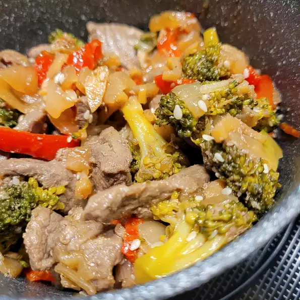

Easy Ginger Beef

A Quick And Easy Ginger Beef Recipe!
Ingredients
- 1 pound round steak, thinly sliced
- 1 (1 inch) piece fresh ginger root, peeled and thinly sliced
- 1 tablespoon soy sauce
- 1 teaspoon butter
- 1 onion, chopped
- 12 mushrooms, sliced
- ¼ cup sweet and sour sauce
- 4 cups cooked rice
Recipe Instructions
- Place steak, ginger, and soy sauce in a bowl; turn to coat steak. Cover tightly; marinate in the refrigerator for at least 30 minutes or up to overnight.
- Heat a wok over high heat; pour in beef mixture. Cover wok; cook until beef is browned, about 5 minutes. Remove beef from wok.
- Heat butter in wok over high heat; stir in bell pepper, onion, mushrooms, and sweet and sour sauce. Cover and cook until vegetables begin to soften, about 3 minutes. Stir cooked beef into vegetable mixture; cook until heated through, about 2 minutes. Serve over cooked rice.
Return To Main Page